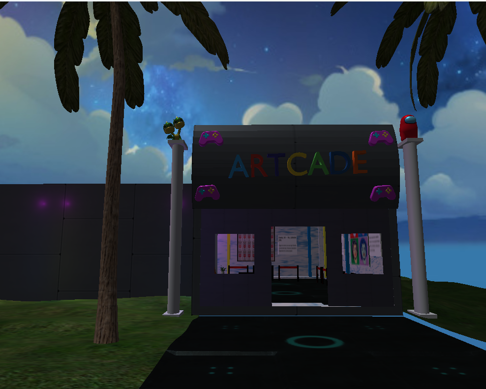
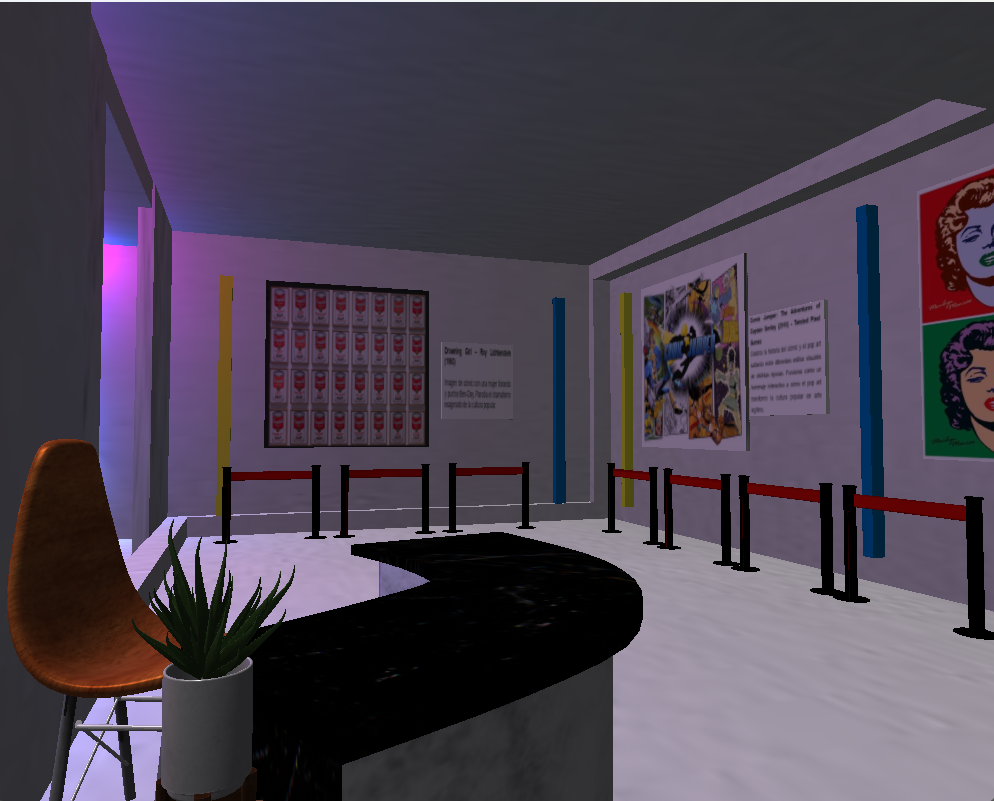
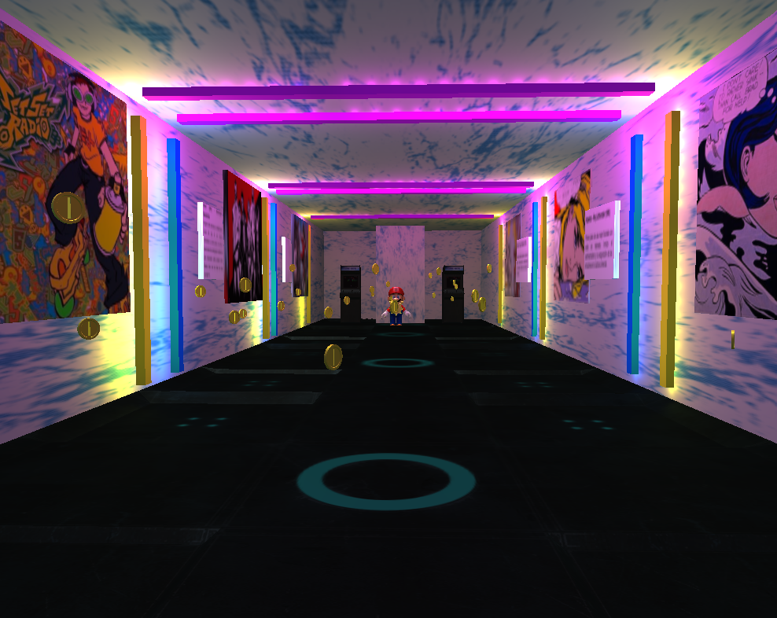

En nuestra galería podras encontrar las siguientes secciones

Afueras de la galeria

Recepción

Pasillo principal
Conoce sobre la cultura Pop atravez de obras del pintor Roy Lichtenstein, integrandose con videojuegos de los años 2000´s.